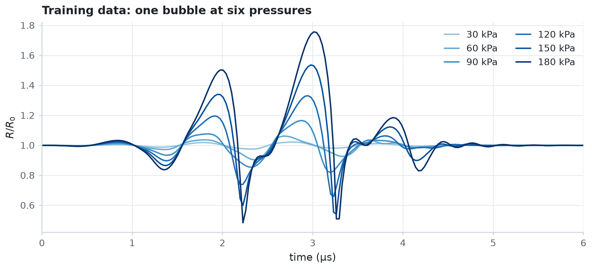

Learn a shell law with a neural network¶
When you don't know the form of a constitutive law, you can learn it from data. In this example, a small neural network takes the place of the surface tension \(\sigma(R)\) of a lipid shell, and fit_parameters trains its weights on radius curves recorded at six driving pressures. The network recovers the buckling, elastic, and ruptured regimes of the Marmottant law without being told that they exist.
import os
import time
import equinox as eqx
import jax
import jax.numpy as jnp
import matplotlib.pyplot as plt
import numpy as np
import optax
from jbubble import SaveSpec, fit_parameters, run_simulation
from jbubble.bubble.eom import KellerMiksis
from jbubble.bubble.gas import PolytropicGas
from jbubble.bubble.medium import NewtonianMedium
from jbubble.bubble.property import NeuralProperty
from jbubble.bubble.shell import LipidShell, MarmottantSurfaceTension
from jbubble.bubble.state import BubbleState
from jbubble.metrics import normalised_mse_radius
from jbubble.pulse import HannEnvelope, ToneBurst
from jbubble.pulse.shapes import Sine
plt.style.use("jbubble.style.light")
# Set JBUBBLE_QUICK=1 for a fast, coarse run (used by CI).
QUICK = os.environ.get("JBUBBLE_QUICK") == "1"
# Training steps. About 1000 steps take about a minute on a laptop CPU and
# recover the law to within a few mN/m. About 3000 steps tighten the fit
# further, roughly halving the error in sigma(R).
N_STEPS = 100 if QUICK else 1000
Make stand-in measurements¶
The stand-in bubble is a 2 µm SF6 bubble with a lipid shell that follows the piecewise MarmottantSurfaceTension law, driven by five-cycle, Hann-windowed 1 MHz tone bursts from 30 to 180 kPa. The low pressures probe the shell near its equilibrium radius, and the high pressures drive it through buckling and rupture. The shell viscosity and every other model input are known; only \(\sigma(R)\) is unknown.
R0 = 2e-6 # equilibrium radius [m]
KAPPA_S = 7.5e-9 # shell dilatational viscosity [N s/m]
SIGMA_MAX = 0.072 # surface tension of water, the upper bound on sigma [N/m]
PRESSURES = [30e3, 60e3, 90e3, 120e3, 150e3, 180e3] # [Pa]
SAVE_SPEC = SaveSpec(256)
T_MAX = 8e-6 # [s]
def make_eom(sigma):
return KellerMiksis(
gas=PolytropicGas(gamma=1.095),
shell=LipidShell(sigma=sigma, kappa_s=KAPPA_S),
medium=NewtonianMedium(mu=1e-3, rho_L=998.0, c_L=1500.0),
R0=R0,
P_amb=101325.0,
)
def make_pulse(pressure):
return ToneBurst(
freq=1e6, pressure=pressure, shape=Sine(), cycle_num=5, envelope=HannEnvelope()
)
true_sigma = MarmottantSurfaceTension(
R_buckle_ratio=0.98058, chi=0.5, sigma_rupture=SIGMA_MAX
)
recordings = [
run_simulation(
make_eom(true_sigma), make_pulse(p), save_spec=SAVE_SPEC, t_max=T_MAX
)
for p in PRESSURES
]
conditions = [
{"pressure": p, "radius": r.radius}
for p, r in zip(PRESSURES, recordings, strict=True)
]
ts_us = np.asarray(recordings[0].ts) * 1e6 # [µs]
# The range of R/R0 that the recordings cover. The data say nothing about
# sigma outside it.
x_lo = min(float(c["radius"].min()) for c in conditions) / R0
x_hi = max(float(c["radius"].max()) for c in conditions) / R0
print(f"The recordings span R/R0 = {x_lo:.2f} to {x_hi:.2f}")
shades = plt.get_cmap("Blues")(np.linspace(0.4, 1.0, len(PRESSURES)))
fig, ax = plt.subplots(figsize=(8, 3.6))
for condition, colour in zip(conditions, shades, strict=True):
label = f"{condition['pressure'] / 1e3:.0f} kPa"
ax.plot(ts_us, condition["radius"] / R0, color=colour, lw=1.4, label=label)
ax.set_xlim(0, 6) # the bubble has rung down by 6 µs
ax.set_xlabel("time (µs)")
ax.set_ylabel(r"$R/R_0$")
ax.set_title("Training data: one bubble at six pressures")
ax.legend(loc="upper right", ncols=2)
plt.show()
The recordings span R/R0 = 0.48 to 1.76

Put a network in the shell¶
NeuralProperty wraps any Equinox network as a Property: it passes the normalised radius \(R/R_0\) to the network and returns its output. Any model input that accepts a Property accepts it, here the shell's surface tension.
The network's final_activation bounds its output to \((0, \sigma_\text{max})\) with a scaled sigmoid. The bound encodes what you know about the physics: a surface tension is never negative and never exceeds that of clean water. It also keeps every law that the optimiser tries during training physical, so the solver never meets a negative surface tension.
def bounded_sigma(x):
return SIGMA_MAX * jax.nn.sigmoid(x)
sigma0 = NeuralProperty(
net=eqx.nn.MLP(
in_size=1,
out_size=1,
width_size=8,
depth=2,
activation=jnp.tanh,
final_activation=bounded_sigma,
key=jax.random.PRNGKey(0),
)
)
n_weights = sum(w.size for w in jax.tree.leaves(eqx.filter(sigma0, eqx.is_array)))
print(f"The network has {n_weights} weights")
The network has 97 weights
Train it with fit_parameters¶
params0 can be any Equinox module: fit_parameters fits every floating-point array inside it, here the network's weights, and passes the module to make_model. Each recording is one entry of conditions, and the six recordings run in parallel with jax.vmap. A cosine-decay learning rate lets the fit settle at the end of training.
step_callback keeps a few snapshots of the network, so that you can watch the law take shape.
def make_model(sigma, condition):
return make_eom(sigma), make_pulse(condition["pressure"])
def loss_fn(result, condition):
return normalised_mse_radius(result.radius, condition["radius"], R0)
snapshot_steps = (0, N_STEPS // 5, N_STEPS)
snapshots = {}
def keep_snapshots(step, sigma, loss):
if step in snapshot_steps:
snapshots[step] = sigma
start = time.perf_counter()
fit = fit_parameters(
make_model,
sigma0,
conditions=conditions,
loss_fn=loss_fn,
optimizer=optax.adam(optax.cosine_decay_schedule(1e-2, N_STEPS, alpha=0.05)),
n_steps=N_STEPS,
save_spec=SAVE_SPEC,
t_max=T_MAX,
step_callback=keep_snapshots,
log_every=N_STEPS // 10,
)
print(f"Training took {time.perf_counter() - start:.0f} s: {fit.message}")
step 0 / 1000 loss = 1.4629e-02 <97 values in 6 arrays>
step 100 / 1000 loss = 5.2038e-03 <97 values in 6 arrays>
step 200 / 1000 loss = 5.1441e-03 <97 values in 6 arrays>
step 300 / 1000 loss = 5.1256e-03 <97 values in 6 arrays>
step 400 / 1000 loss = 5.0335e-03 <97 values in 6 arrays>
step 500 / 1000 loss = 1.4756e-04 <97 values in 6 arrays>
step 600 / 1000 loss = 6.6689e-05 <97 values in 6 arrays>
step 700 / 1000 loss = 4.5394e-05 <97 values in 6 arrays>
step 800 / 1000 loss = 3.6866e-05 <97 values in 6 arrays>
step 900 / 1000 loss = 3.3039e-05 <97 values in 6 arrays>
step 1000 / 1000 loss = 3.1047e-05 <97 values in 6 arrays>
Training took 99 s: completed 1000 steps
Compare the learned law with the truth¶
A Property is a function of the bubble state, so you can evaluate the learned law, and the true one, on any grid of radii.
x = jnp.linspace(0.3, 2.0, 400)
def evaluate(sigma):
"""sigma(R) in mN/m on the grid of R/R0 values."""
values = jax.vmap(lambda r: sigma(BubbleState(R=r * R0, R0=jnp.asarray(R0))))(x)
return np.asarray(values) * 1e3
sigma_true = evaluate(true_sigma)
sigma_learned = evaluate(fit.params)
inside = (np.asarray(x) >= x_lo) & (np.asarray(x) <= x_hi)
rmse = np.sqrt(np.mean((sigma_learned - sigma_true)[inside] ** 2))
print(f"Loss {float(fit.loss_history[0]):.2e} -> {float(fit.loss_history[-1]):.2e}")
print(f"RMS error in sigma(R) over the recorded range: {rmse:.1f} mN/m")
learned_r0 = float(fit.params(BubbleState(R=jnp.array(R0), R0=jnp.array(R0)))) * 1e3
true_r0 = float(true_sigma(BubbleState(R=jnp.array(R0), R0=jnp.array(R0)))) * 1e3
print(f"sigma(R0): learned {learned_r0:.1f} mN/m, true {true_r0:.1f} mN/m")
Loss 1.46e-02 -> 3.10e-05
RMS error in sigma(R) over the recorded range: 2.1 mN/m
sigma(R0): learned 19.8 mN/m, true 20.0 mN/m
fig = plt.figure(figsize=(12, 4.2))
grid = fig.add_gridspec(2, 3, width_ratios=[0.8, 1.2, 1.1])
ax_loss = fig.add_subplot(grid[:, 0])
ax_sigma = fig.add_subplot(grid[:, 1])
ax_low = fig.add_subplot(grid[0, 2])
ax_high = fig.add_subplot(grid[1, 2], sharex=ax_low)
ax_loss.semilogy(fit.loss_history, color="C0")
ax_loss.set_xlabel("step")
ax_loss.set_ylabel("loss (normalised MSE)")
ax_loss.set_title("Training loss")
# Outside the recorded range, the network extrapolates freely.
for lo, hi in ((float(x[0]), x_lo), (x_hi, float(x[-1]))):
ax_sigma.axvspan(lo, hi, color="0.92", lw=0)
ax_sigma.text(
(lo + hi) / 2,
36,
"no data",
rotation=90,
ha="center",
va="center",
color="0.45",
)
ax_sigma.plot(x, sigma_true, color="0.15", lw=1.4, ls="--", label="Marmottant (true)")
for step, alpha in zip(snapshot_steps[:-1], (0.3, 0.6), strict=True):
ax_sigma.plot(
x,
evaluate(snapshots[step]),
color="C0",
lw=1.4,
alpha=alpha,
label=f"step {step}",
)
ax_sigma.plot(x, sigma_learned, color="C0", lw=2.2, label=f"step {N_STEPS}")
ax_sigma.set_xlim(float(x[0]), float(x[-1]))
ax_sigma.set_ylim(-3, 1e3 * SIGMA_MAX + 6)
ax_sigma.set_xlabel(r"$R/R_0$")
ax_sigma.set_ylabel(r"$\sigma$ (mN/m)")
ax_sigma.set_title("Learned surface tension")
ax_sigma.legend(loc="lower right")
for ax, index in ((ax_low, 0), (ax_high, len(PRESSURES) - 1)):
condition, result = conditions[index], fit.result[index]
ax.plot(ts_us, condition["radius"] / R0, ".", ms=3, color="0.55", label="data")
ax.plot(ts_us, result.radius / R0, color="C0", lw=1.4, label="learned model")
ax.set_ylabel(r"$R/R_0$")
ax.text(
0.98,
0.9,
f"{condition['pressure'] / 1e3:.0f} kPa",
transform=ax.transAxes,
ha="right",
va="top",
color="0.35",
)
ax_low.set_title("Radius: data and model")
ax_low.tick_params(labelbottom=False)
ax_low.set_xlim(0, 6)
ax_high.legend(loc="lower right")
ax_high.set_xlabel("time (µs)")
plt.show()

For the first few hundred steps, the loss sits on a plateau. The network first settles on a nearly constant surface tension close to \(\sigma_\text{max}\), the best that a flat law can do. Once it bends the curve near \(R_0\), the loss falls by two orders of magnitude.
Within the recorded range, the network reproduces the three regimes: zero tension when the shell buckles, a steep elastic rise near \(R_0\), and the tension of clean water once the shell ruptures. The lowest pressure is the hardest recording to match, because there the radius depends mostly on the slope of \(\sigma\) near \(R_0\), the shell elasticity. More training steps tighten it; see N_STEPS at the top of the example.
Outside the recorded range, the data say nothing, so the network's values there are a guess. Here, the saturated sigmoid happens to continue the right trend, but nothing guarantees it. Record at the amplitudes where you want to know the law.
To turn the learned curve into numbers, such as the buckling radius or the elasticity, fit a parametric law to it, or fit that law to the data directly, as in example 10. For more on neural laws, failed trial steps, and solver settings for training, see the fitting guide.